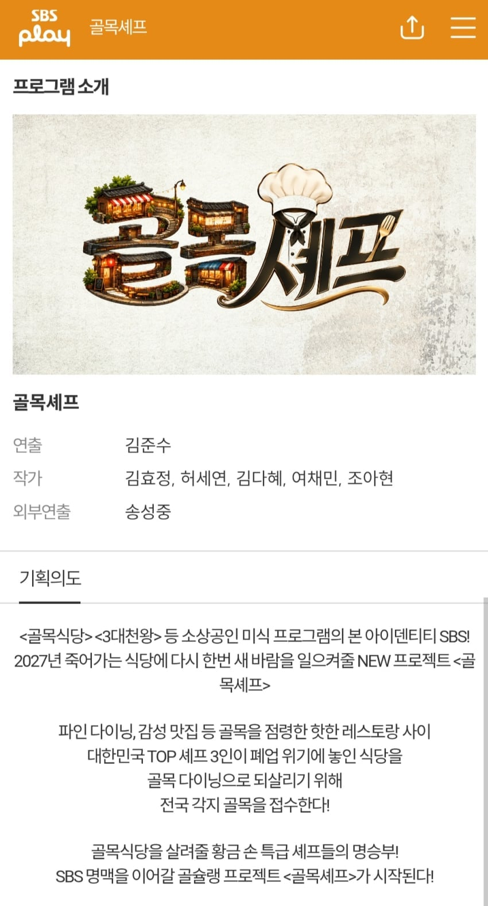
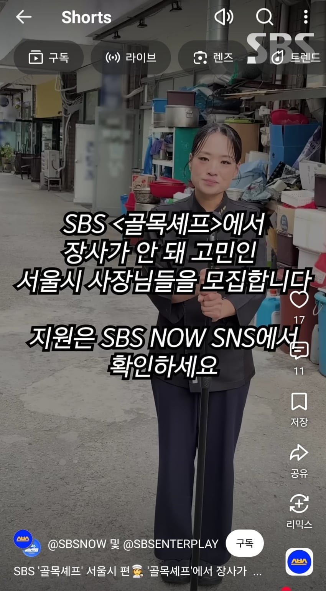
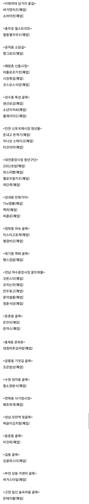

참고로 골목식당 출연했던 가게들은



참고로 골목식당 출연했던 가게들은

식당들이 안한다고 해도 꼬드겨서 섭외하는 거였다는걸 안 다음부턴 걍 역겨움 프로그램 자체가
스브스 ㅅㅂㄲ
어차피 망할가게 좋은의도든 나쁜의도든 솔루션이라도 받게해주는거는 좋은취지아니냐?
안된거만 가지고와서 왜 함?ㅋㅋ 이러는건 좀 아닌거같음
그런데 청파동 하숙골목에 폐업한 가계는 둘다 중간에 솔루션 중단한 곳이잖아.
골목식당이 이상한짓은 ㅈㄴ 많이했는데 그래도 악영향만 끼친건 아니라고 봄
맞긴함. 당연한 위생얘기 계속 강조해서 좋은 영향 끼치긴했는데 중요한건 자기자신도 강조한것들 다 어겼다는거 ㅋㅋ
위생 하나는 건짐.
근에 장사가 망한 중요한 요인들빼고 가격에 맛에 이상한부분만 트집잡음. 말도안되는거나
메뉴로 이상한 꼽주는거랑 무조건 가격 후려치는거는 진짜 ㅋㅋ..
그때는 그게 맞는줄알았음 ㅋㅋ 겉으로봤을땐 대성공한사람이었으니까 노하우 알려준줄 알았지. 손님입장에서만 봤고. 나중에보니까 가격후려치면 사람들몰려서 방송으로는 대성공으로 보이는데 사장은 죽는 시스템이었단거지 ㅋㅋ
폐폐폐 업업업
어차피 망할가게 조금이라도 생명 연장 시켰던거 아닌가 ㅋㅋㅋㅋㅋ
장사의신 컨설팅에서도 꾸준하게 망할애들은 다 망하고 폐업하는데
나도 10년넘게 장사하는데 요리 잘 못함. 맛은 사실 레시피도 워낙 많이 오픈되어있고 기본이상 하는 집들은 다 상향평준화 되어있어서 저분들이 와도 업주 입장에서는 이슈몰이 외에는 모르겠다. 어차피 솔루션받는 업장들이 대박나는게 목적이 아니라 프로그램의 재미가 주목적이긴할테니.. 실질적으로 망해거는 가게 살리는건 맛을 잘내는 셰프들보다는 장사를 잘하는 사업가들이 맞긴하지. 예를 들면 산청 대표같은사람들
최강록은 자기 식당도 말아먹었는데 장사는 정지선 맛은 최강록 이렇게 가는건가
최강록은 말아먹은게아니라 너무 유명해져서 감당안되서 걍 문닫은거임
유명해지기 전에 했던 반찬가게 망한적 있음
너무 맛있게 하려다 그만 수도가스비가 감당이 안돼서…
네오 전에 골목식당에 망한가게 예시가 최강록이었음
SBS는 먹거리부터 골목식당 외 다수 프로그램으로 자영업자 이용하는거 놓지를 못하는구만
가만히 있었어도 폐업할 가게들 아니었냐
골목식당이 ㅈ같긴한데 폐업리스트만 뽑아서 올리는건 아니지않나?
200회방송이고 3회당 한지역? 3식당하면 200곳정도인데 평균 폐업률 감안하면 평타이상은 친거아님?